Input action map editor
The Input Action Map Editor allows you to define "Actions" (such as Grab, Teleport, or Menu) and bind them to specific hardware inputs across different controller profiles.
Navigate to the top menu in the Unity Editor and select VXR Input > Action Map Editor to open the editor.
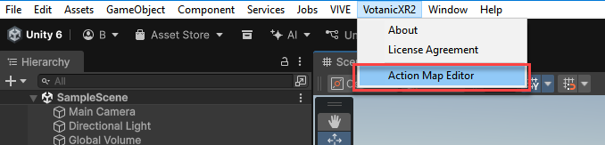
Configure input action map
- To create a new action map, select New from top right corner of the context menu.
- To load an existing action map, select Load from top right corner of the context menu.
- To save an existing action map, select Save from top right corner of the context menu.
- To save an existing action map as a brand new copy, select Save As from top right corner of the context menu.
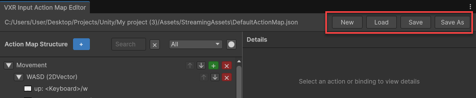
Configure actions
- To create a new action, select the blue Add (
+) icon in the header of action map structure column. - To reorder an existing action, select the Up (
↑) or Down (↓) Arrow icon of the action. - To delete an existing action, select the Cross (
✖) icon of the action.
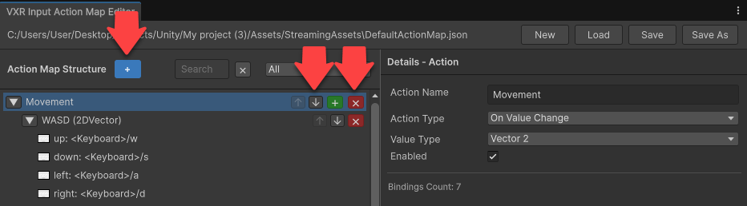
Edit action properties
If you select an action, you can edit its properties in the Details panel on the right:
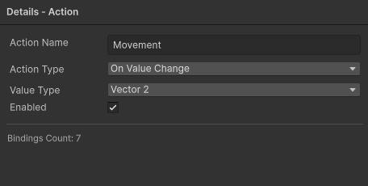
| Action Type | Description |
|---|---|
| Every Frame | Called every frame |
| On Value Change | Called when the input value changes |
Configure bindings
- To add a new binding, select the green Add (
+) icon of the action. - To delete an existing binding, select the Cross (
✖) icon of the binding.
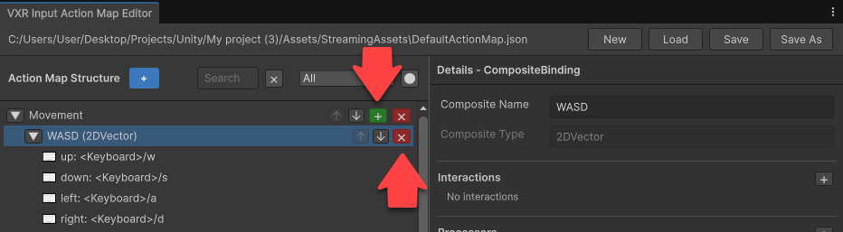
If you select a binding, you can edit its properties in the Details panel on the right:
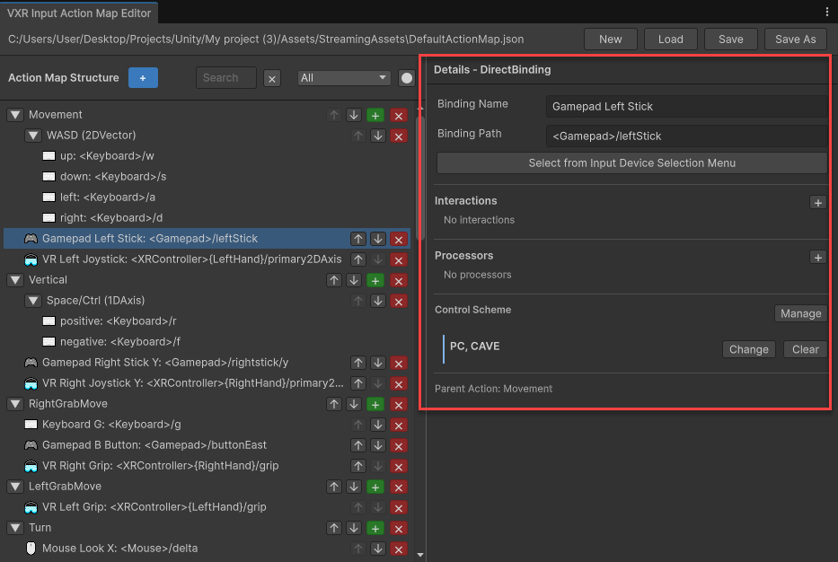
Edit composite bindings
Like Unity's input system, VotanicXR2 also support composite bindings. Refer to Composite bindings to learn more.
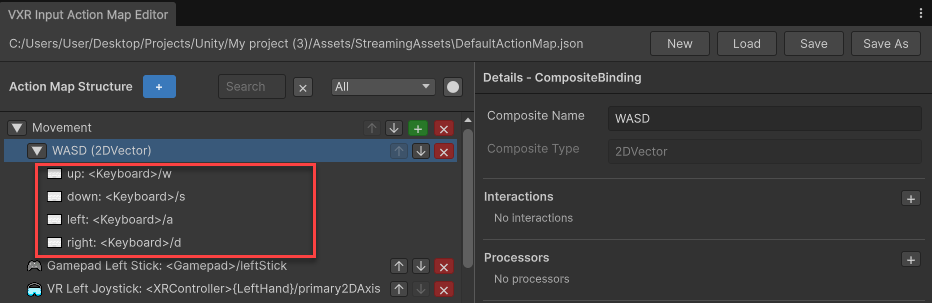
- To add a new composite binding, select the green Add (
+) icon of the action, and select the composite binding type from the popup menu.
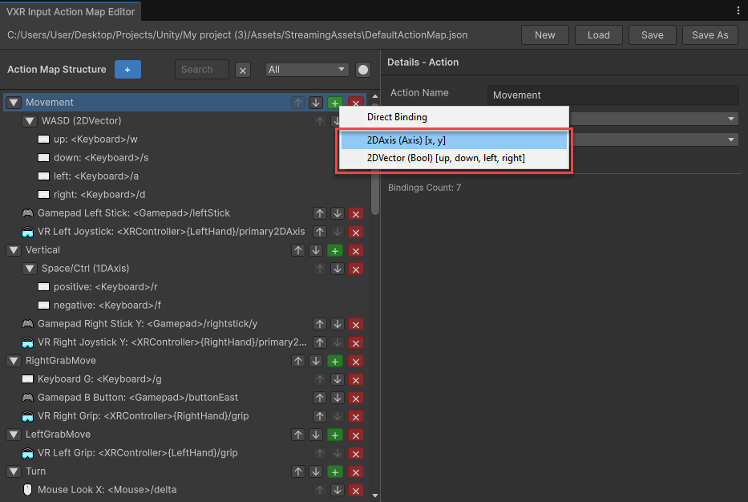
- To edit the properties of a composite part, click on the composite part and use the Details panel on the right to edit its properties.
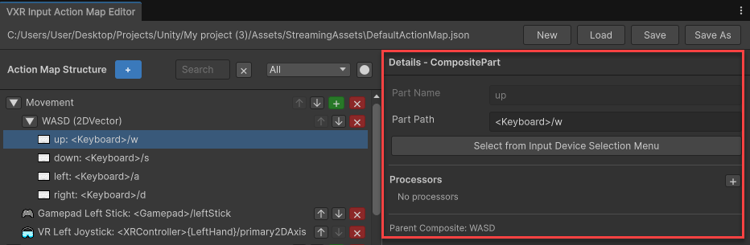
Edit control schemes
Input action assets can have multiple control schemes, which let you enable or disable different sets of bindings for your actions for different types of devices.
- To add a new control scheme, select Manage then Add New Control Scheme from the control scheme section.
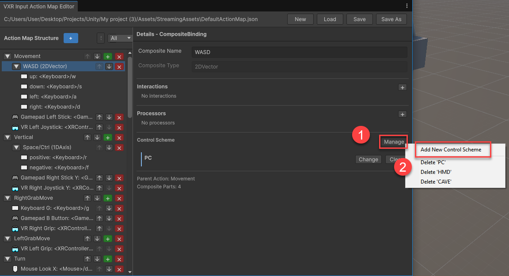
- To change the control scheme of a binding, select Change then select the control scheme from the popup menu.
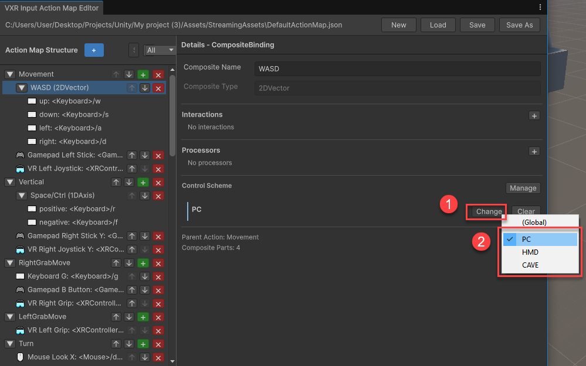
- To delete a control scheme, select Manage then select the control scheme from the popup menu.
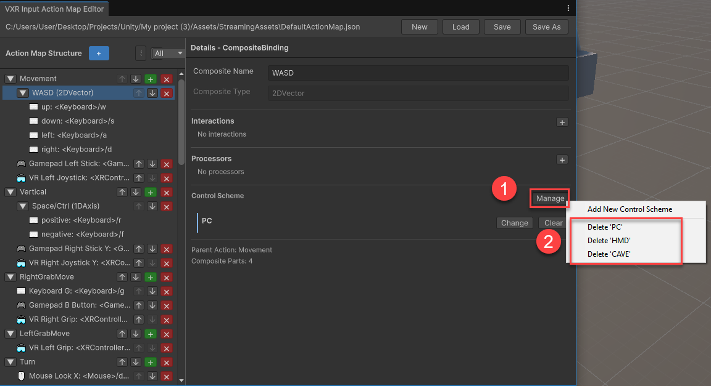
Set the active action map or config file
To change the the input action map used by your project, follow these steps:
- Select VXR SDK Manager in the hierarchy.
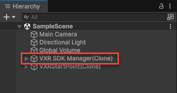
- Go to VXR SDK Manager component:
- To set the active config of the project, click Select Config and pick the
.vxrc2config file. - To set the active action map of the project, click Select Action Map and pick the
.jsonaction map file.
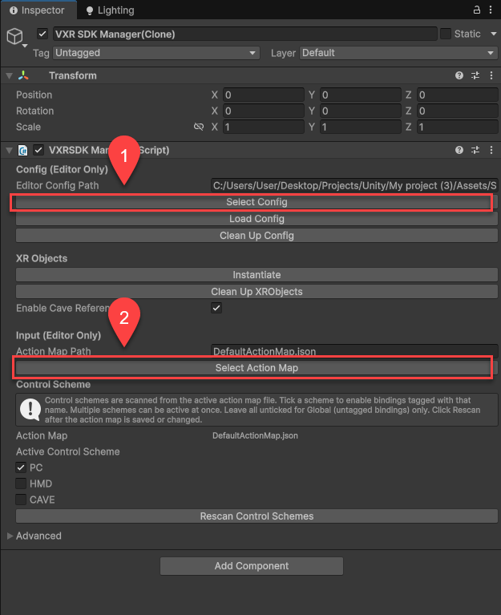
- Save the scene or apply the changes.
Set the active control scheme
Once you set an action map in the input manager, you can enable or disable the sets of bindings to use by configuring the active control scheme:
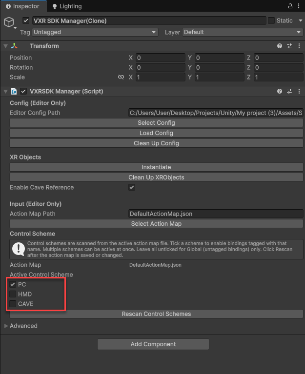
To actively test your XR application during development, enable the control scheme that matches your testing hardware and environment. These control schemes are provided in the default action map:
- PC control scheme for local PC testing
- HMD control scheme for Head-mounted display testing
- CAVE control scheme for testing in Votanic CAVE systems